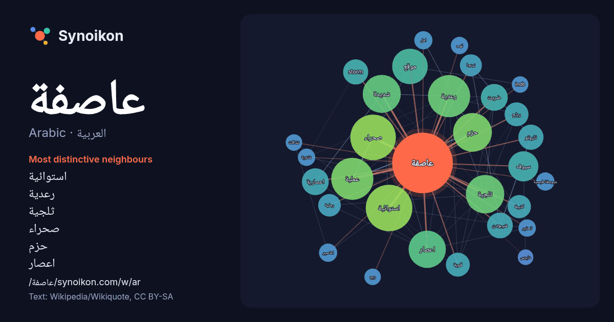

العربية · Arabic · word of the day list
عاصفة
“storm” · The words found around it in 936 instances from Arabic Wikipedia, Wikiquote.

Most distinctive neighbours
- استوائية 62×
- رعدية 59×
- ثلجية 48×
- صحراء 47×
- حزم 43×
- اعصار 43×
- شديدة 35×
- سيوف 29×
- اعصارية 25×
- ضربت 24×
- شيبودن 23×
- storm 22×
- ناروتو 22×
- رملية 17×
- نينجا 16×
- كتيبة 16×
- عملية 15×
- رياح 15×
- قوية 13×
- موقع 13×
× = how many times more often than in general Arabic Wikipedia text.
Most frequent neighbours
- استوائية 72
- صحراء 69
- رعدية 59
- عملية 59
- حزم 50
- ثلجية 49
- شديدة 48
- اعصار 46
- موقع 42
- سيوف 30
- شمال 25
- فيلم 25
- اعصارية 24
- ضربت 24
- شيبودن 22
- storm 21
- ناروتو 21
- رياح 19
- قوية 19
- كتيبة 18
In context
- اليمن. وتعتبر عاصفة الحزم إعلان بداية العمليات العسكرية بقيادة القوات المسلحة السعودية لدعم شرعية نظام عبد ربه هادي منصور في اليمن. عملية عاصفة الحزم تم فيها Wikipedia snippets · عملية عاصفة الحزم
- كالعواصف المدارية، والزوابع على قارات بأكملها، وتدوم لأسابيع. عاصفة رعدية عاصفة رملية عاصفة ثلجية رياح القص طاقة الإعصار المتراكمة المعجم الموحد لمصطلحات Wikipedia snippets · عاصفة
- الخط الدرامي عندما حدث ذات ليلة أن هبت على الجزيرة عاصفة شديدة. وسقط المطر الغزير، واشتدت ريح العاصفة، وملأ ضوء البرق وصوت الرعد الأرض والسماء، وأثارت الريح Wikipedia snippets · العاصفة (مسرحية)
- عاصفة أوتار براديش هي عاصفة عنيفة ضربت ولاية أوتار براديش الهندية في 14 مايو 2026، وتسببت في سقوط نحو 89 قتيلًا وعشرات المصابين، بالإضافة إلى أضرار واسعة Wikipedia snippets · عاصفة أوتار براديش 2026
- تشير إلى عاصفة رعدية شديدة، إلا أنه يُصدر تحذير من إعصار بدلاً من تحذير من عاصفة رعدية شديدة . يُصدر تحذير من عاصفة رعدية شديدة إذا اشتدت العاصفة الرعدية، Wikipedia snippets · عاصفة رعدية
- المسلسل النادر «وتوالت الأحداث عاصفة» الشهير بجملة «أنا البرادعي يا رشدي» من بطولة عبد الله غيث وسهير البابلي وحسن مصطفى وليلى علوي الإخراج: حسام الدين Wikipedia snippets · وتوالت الأحداث عاصفة (مسلسل)
- عاصفة من الدموع هو فيلم مصري عرض عام 1979، بطولة فريد شوقي وليلى طاهر وعمر الحريري ومريم فخر الدين وهالة فؤاد وعماد رشاد، ومن إخراج عاطف سالم. يرفض عصام Wikipedia snippets · عاصفة من الدموع (فلم)
- أفضل رواية جريمة أولى في السويد عاصفة الشمس (الإنجليزية: Sun Storm) (نيويورك، مطبعة ديلاكورتيISBN:978-0-385-33981-0) عاصفة الشمس (الإنجليزية: Sun Storm) Wikipedia snippets · عاصفة الشمس
More Arabic words
- أغنية
- إله
- تاريخ
- جبل
- جرس
- جزيرة
- جسر
- حديقة
- حصان
- حقيقة
- حياة
- خبز
- خريطة
- خريف
- ذهب
- زمن
- ساعة
- شاي
- شتاء
- صحة
- صحراء
- صمت
- صيف
- طبيعة
- طريق
- طعام
- ظل
- عائلة
- عسل
- علم
- عمل
- غابة
- فن
- قطار
- قطة
- قلب
- قوة
- كلب
- لغة
- ماء
- مال
- مدينة
- مرآة
- مطر
- ملح
- مناخ
- موت
- نجم
- والدة
Precomputed on 2026-10-09 with default settings (±5 words, medium corpus). The interactive map can refresh it with live data.